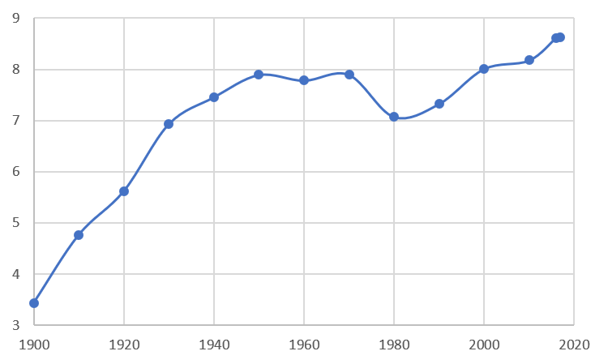

The United States has a population of 327.2 million people. While this is a large number, the United States also has a massive quantiity of land that helps to space out its population. But, as this map shows, the American population is not evenly spcaed out. People tend to live amongts other people and form points of large gatherings, cities. This map shows the population density of each state, along with the 5 most populated US cities using greaduated symbols to vidualize thier respective populations. Click on each city to see the city name and total population.
If you would like to zoom into the most populatied city in the United States, click here:
If you would like to zoom into the most dense state in the United States, click here:
The most populated city in Aemrica is New York City. Below is a graph showing the population growth of New York City in recent years in terms of millions of people.
